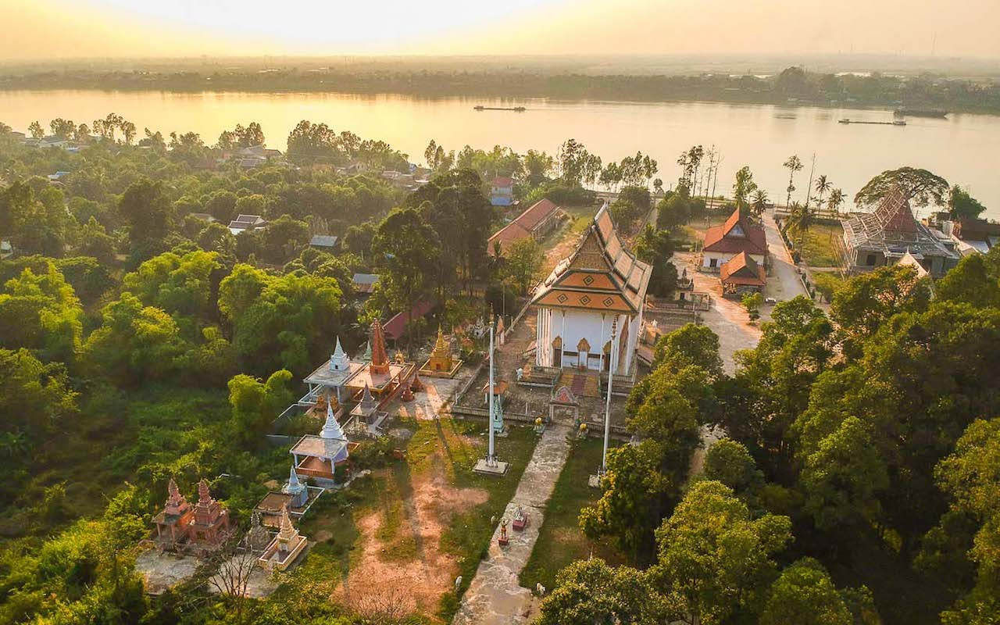

Koh Dach sits in the Mekong River, about 15km north of central Phnom Penh. You cross by ferry, which is part of the experience.

Koh Dach (Silk Island), Mekong River, Phnom Penh
Known as Silk Island for its centuries old weaving tradition, Koh Dach is a peaceful escape from the city. Rice paddies, bamboo huts, riverside sunsets, and now Amra waiting at the end of your ride.
From central Phnom Penh, head north across the Japanese Bridge. About 12 to 15km, around 30 minutes by tuk-tuk or taxi, roughly $5 to $10.
Take the ferry to Koh Dach. It runs 8am to 8pm daily. Costs 1,000 riels per person (about $0.25), or 3,000 riels if you bring a motorbike.
On the island, Amra is roadside on the Koh Dach Track. Large parking area out front. Look for the retro style building surrounded by greenery.
Best visited December through February. Rent a bicycle or scooter (about $5 a day) and pair your café stop with the nearby silk weaving center.